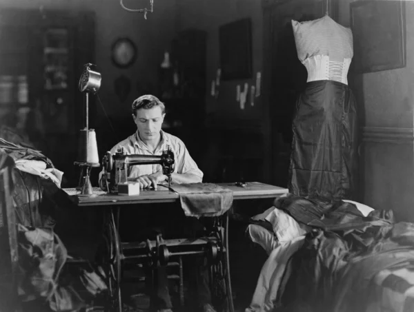
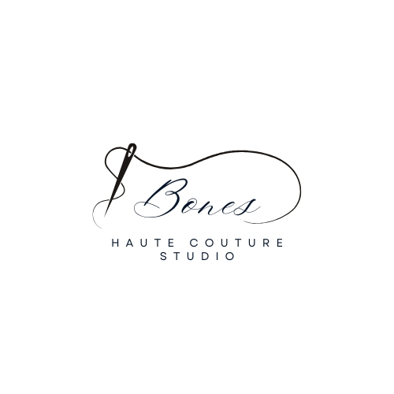

Nuestra Historia
En el corazón de la elegancia y la artesanía, nació bones, una firma dedicada a redefinir la sastrería masculina con un enfoque en la excelencia, la precisión y el estilo atemporal. Nuestra historia comienza en 1930 cuando Elio De Coster, un apasionado de la moda y la confección a medida, decidió dar vida a su sueño: crear trajes que no solo vistieran al hombre, sino que contaran su historia. Inspirado por la sastrería tradicional europea y la necesidad de modernizar el concepto del traje clásico, Elio de Coster estableció un atelier donde cada prenda se elabora con materiales de la más alta calidad y un meticuloso trabajo artesanal. Desde sus inicios, Bones se ha caracterizado por su atención al detalle, fusionando la tradición sartorial con la innovación. Cada traje es diseñado a medida, respetando la anatomía y personalidad de quien lo viste, asegurando un ajuste impecable y un estilo inconfundible. Con el tiempo, la firma ha vestido a líderes, empresarios, artistas y caballeros que buscan distinción y exclusividad en cada prenda. A través de colecciones que combinan la elegancia clásica con las tendencias contemporáneas, hemos logrado posicionarnos como un referente en el mundo de la alta costura masculina. Más que una marca, Bones es sinónimo de identidad, confianza y sofisticación. Seguimos evolucionando sin perder de vista nuestra esencia: el arte de la sastrería llevada a su máxima expresión.
Nuestra Misión
En Bones, nuestra misión es elevar la elegancia masculina a su máxima expresión, fusionando la tradición sartorial con la innovación contemporánea. Nos dedicamos a confeccionar trajes exclusivos que reflejen la personalidad, confianza y distinción de cada cliente, garantizando un ajuste impecable y una experiencia de lujo en cada detalle. A través de materiales de la más alta calidad, técnicas artesanales y un enfoque personalizado, buscamos redefinir el concepto de la sastrería moderna, ofreciendo prendas que trascienden el tiempo y las tendencias. Nos comprometemos con la excelencia, la sostenibilidad y el arte de la confección, para vestir a hombres que valoran el estilo, la autenticidad y la sofisticación.
